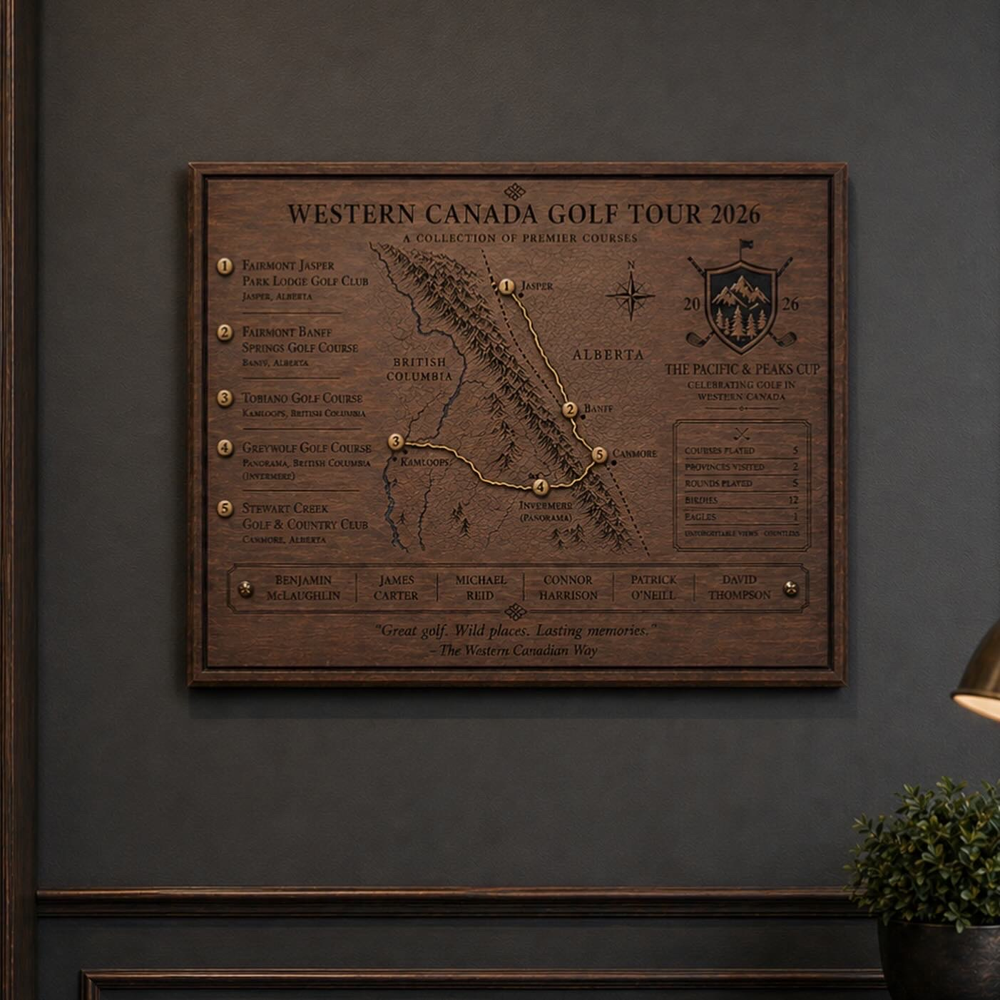

Plaques
Commemorative and hole-in-one pieces. Each one unique.


Marking significant moments
Commemorative plaques and hole-in-one pieces designed to mark significant moments on your course. Each plaque is a one-of-a-kind commission. The materials, engraving, and presentation are designed specifically for the occasion and the course.
Our plaques are crafted from locally sourced hardwoods with options for epoxy resin inlay, metal detailing, and engraved topographic hole maps. Hole-in-one pieces can incorporate the actual ball from the shot, mounted on a metal pin and set into the face of the plaque. Course map plaques reproduce the layout of your property in engraved detail, suited to clubhouse display, member gifts, or tournament awards.


For clubs, events, and individual golfers
Each commission is fully custom. Wood selection, dimensions, finish treatment, engraving content, and mounting hardware are all determined in collaboration with the client. Pieces can be designed for wall mounting, tabletop display, or freestanding presentation depending on the intended setting.
These pieces are commissioned by private clubs, resort properties, tournament organizers, and individual golfers looking to commemorate an achievement with something built to last. Clubs also commission series of plaques for ongoing hole-in-one programs, with each new piece designed to complement the existing collection while remaining unique to the individual moment.
The process typically starts with the details of the occasion: the course, the hole, the player, and any specific design references or branding to incorporate. We develop a concept, confirm materials and layout, and move into production. Finished pieces are inspected and shipped ready to mount or display.
All plaques are designed and built in our Vancouver studio. We ship across North America and internationally.
Interested in commissioning a piece for your course?
Email us to start →